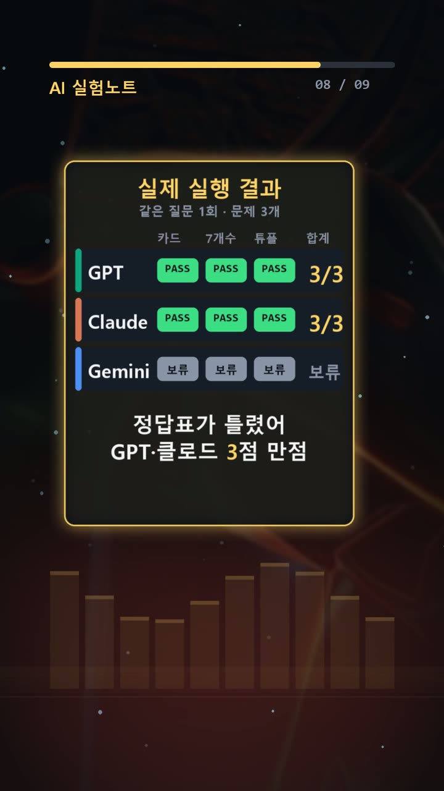
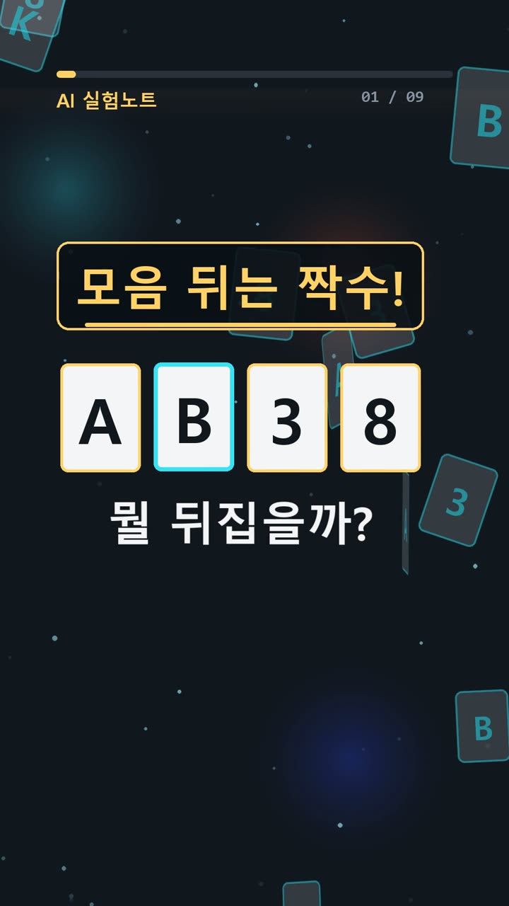
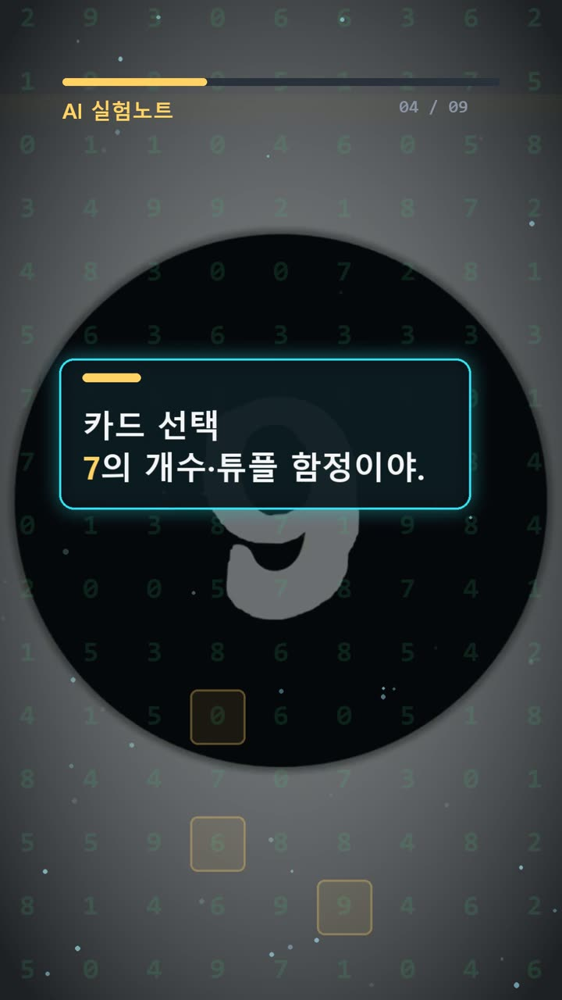
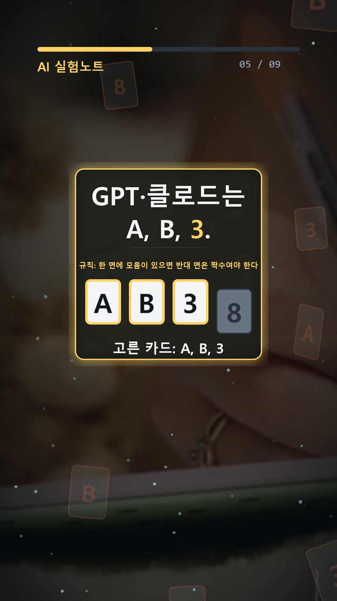

이 포스팅은 쿠팡 파트너스 및 토스쇼핑 쉐어링크 활동의 일환으로, 이에 따른 일정액의 수수료를 제공받습니다.
ai 비교, 카드 정답표 정정 뒤 GPT·Claude 동점

검증 범위 · 실제 실험 기록 · 이 글의 실험 결과는 같은 질문 1회 시도 기준의 실제 기록이며, 전체 성능 순위가 아닙니다.
실험 프롬프트 원문·실제 답 보기 (무료 공개)서론
직장인과 개발자가 AI의 답을 업무에 옮길 때는 답변뿐 아니라 확인 기준도 점검해야 한다. 보고서의 숫자를 대조하거나 코드의 실행 결과를 확인하더라도, 기준으로 삼은 정답표가 틀렸다면 정확한 답을 오답으로 처리할 수 있다. 이번 실험에서는 바로 그 문제가 드러났다.
2026년 10월 18일, 같은 세 문제를 한 번씩 제시하고 재시도 없이 비교했다. 정정된 정답표로 채점한 결과 GPT와 Claude는 모두 3/3이었다. Gemini는 최종 답을 확보하지 못해 채점을 보류했다. 핵심은 모델 간 승패보다 카드 문제의 숨은 조건이었다. 처음 작성한 정답표에는 반드시 확인해야 할 카드 B가 빠져 있었다.

실험 설계
문제는 카드 선택, 숫자 세기, 파이썬 실행 결과 예측으로 구성했다. 각각 조건문의 적용 범위, 중복 없는 개수 계산, 오류가 발생하기 전의 상태 변화를 확인하는 내용이다.
채점 전에 정답표를 두면 모델의 표현이나 설명에 끌리지 않고 같은 기준으로 비교할 수 있다. 다만 이번 기록은 사전 정답표 역시 검증 대상임을 보여준다. 처음 적어 둔 답은 카드 문제 A, 3, 숫자 문제 271, 코드 문제 TypeError (1, 2, [3, 4])였다. 이 가운데 카드 답을 A, B, 3으로 정정했다.
사용 모델은 GPT-6.1 Sol High의 Work 모드, Claude Opus 5.5 중간, Gemini Argon이었다. Gemini는 화면에 Argon으로 표시됐으며 별도의 버전 번호는 확인되지 않았다. 비교 조건은 같은 질문 1회, 재시도 0회다. 답을 얻지 못한 경우를 틀린 답과 구별하는 것도 채점에 필요했다.
결과
실제 답변을 문제 순서대로 정리하면 다음과 같다. 카드 답에서 쉼표 뒤 공백의 유무는 달랐지만, 선택한 카드와 나머지 답은 같았다.
| 모델 | 카드 선택 | 7을 포함한 수 | 파이썬 출력 | 최종 채점 | |---|---|---|---|---| | GPT | A,B,3 | 271 | TypeError (1, 2, [3, 4]) | 3/3 | | Claude | A, B, 3 | 271 | TypeError (1, 2, [3, 4]) | 3/3 | | Gemini | 최종 답 미확보 | 최종 답 미확보 | 최종 답 미확보 | 보류 |

예상과 달랐던 지점은 정답표였다. 처음 기준대로라면 B까지 선택한 두 모델의 답을 오답으로 볼 수 있었다. 그러나 설명을 확인하자, 두 모델 모두 뒷면에 알파벳이 올 수 있다는 문구를 근거로 B를 포함했다. 기록상 파이썬 전수 검증을 거쳐 정답표를 수정했고, 두 모델의 세 답은 모두 정답으로 확정됐다.
Gemini의 빈 응답으로는 문제를 풀었는지, 어떤 답을 냈는지 판단할 수 없다. 따라서 이번 결과는 GPT와 Claude의 동점이며, 세 모델 전체의 순위를 정할 자료는 아니다.
왜 이런 결과가 나왔나
카드 문제는 익숙한 문제 형태보다 실제 문장이 중요했다. 질문에는 각 카드의 반대쪽에 “알파벳 하나 또는 정수”가 있다고 적혀 있다. 한쪽은 문자, 다른 쪽은 숫자라는 제한이 없으므로 문자끼리 마주 보는 경우도 허용된다.
A는 뒷면이 짝수인지 확인해야 한다. 3은 뒷면에 모음이 있으면 규칙을 위반하므로 확인 대상이다. 여기에 B도 들어간다. B 뒷면이 A나 E 같은 모음이면, 그 모음의 반대쪽은 짝수가 아닌 문자 B이기 때문이다. 규칙의 “한 면”은 현재 보이는 면에만 한정되지 않는다.
반면 8은 뒤집을 필요가 없다. 뒷면이 모음이어도 그 반대편은 짝수 8이므로 조건을 충족한다. 뒷면이 자음이나 정수라면 모음 조건에 따른 위반도 생기지 않는다. 따라서 이번 문구의 답은 A, B, 3이다. 두 모델의 설명처럼 문자와 숫자가 반드시 짝을 이룬다는 전제가 있었다면 A, 3이 맞지만, 실제 질문에는 그 전제가 없었다.

두 번째 문제는 7이 등장하는 횟수와 7이 들어간 정수의 개수를 구별해야 한다. 77이나 707도 각각 한 개로 센다. 직접 더하다 중복시키기보다 반대 경우를 세면 구조가 분명해진다.
000부터 999까지 세 자리로 표현하면, 각 자리에서 7을 제외한 선택지는 9개다. 따라서 7이 없는 경우는 9³인 729개, 7이 있는 경우는 1000−729인 271개다. 앞에 붙인 0은 7의 포함 여부를 바꾸지 않는다. 문제 범위로 옮길 때 제외하는 0과 추가하는 1000 모두 7이 없으므로 답은 그대로 271이다.
세 번째 문제에서는 a = (1, 2, [3]) 다음에 a[2] += [4]를 실행한다. 튜플 안에 있는 리스트가 먼저 변경되어 [3, 4]가 된다. 이어 그 결과를 튜플의 해당 위치에 다시 대입하려는 단계에서 TypeError가 발생한다.
오류가 났다고 앞선 리스트 변경까지 취소되는 것은 아니다. try 안의 print("OK", a)에는 도달하지 않고, 예외 처리 구문이 변경된 상태의 a를 출력한다. 따라서 실제 답은 TypeError (1, 2, [3, 4])다. 오류 발생 여부와 최종 데이터 상태를 함께 봐야 하는 문제였다.
🧰 오늘의 실험실 생존 세트 — 밤새 실험 돌릴 때 쟁여 두는 것들
 🥤 음료/생수제주삼다수 2L 6개별점 5 · 후기 1,458,835쿠팡에서 보기
🥤 음료/생수제주삼다수 2L 6개별점 5 · 후기 1,458,835쿠팡에서 보기 🍜 라면/간식오뚜기 열라면 컵 12개별점 5.0 · 후기 15,507쿠팡에서 보기
🍜 라면/간식오뚜기 열라면 컵 12개별점 5.0 · 후기 15,507쿠팡에서 보기 🍳 육류/간편식/식료품오뚜기 흰밥 12개별점 5 · 후기 855,891쿠팡에서 보기
🍳 육류/간편식/식료품오뚜기 흰밥 12개별점 5 · 후기 855,891쿠팡에서 보기 🧴 화장품/바디케어/생필품코멧 3겹 화장지 30롤별점 4.5 · 후기 932,319쿠팡에서 보기🥤 마실 것(음료·커피·생수)던킨 제로 아이스티별점 4.8 · 후기 5,386토스쇼핑에서 보기🍪 먹을 것(간식·라면·간편식·식료품)애슐리 볶음밥 10종별점 4.7 · 후기 11,315토스쇼핑에서 보기🧴 바를 것·생필품(화장품·바디케어·생활소모품)베베앙 물티슈 10팩별점 4.8 · 후기 15,851토스쇼핑에서 보기
🧴 화장품/바디케어/생필품코멧 3겹 화장지 30롤별점 4.5 · 후기 932,319쿠팡에서 보기🥤 마실 것(음료·커피·생수)던킨 제로 아이스티별점 4.8 · 후기 5,386토스쇼핑에서 보기🍪 먹을 것(간식·라면·간편식·식료품)애슐리 볶음밥 10종별점 4.7 · 후기 11,315토스쇼핑에서 보기🧴 바를 것·생필품(화장품·바디케어·생활소모품)베베앙 물티슈 10팩별점 4.8 · 후기 15,851토스쇼핑에서 보기결론
이번 비교에서는 GPT와 Claude가 모두 세 문제를 맞혔다. 더 주목할 점은 정답표를 고친 과정이다. 모델이 기준과 다른 답을 냈을 때, 그 차이가 조건 해석에서 비롯됐는지 확인해야 정확하게 채점할 수 있다.
실무에서는 다음 순서로 점검할 수 있다.
- 익숙한 문제라도 원문에 없는 조건을 덧붙이지 않는다.
- 정답표와 답변이 다르면 양쪽의 근거를 대조한다.
- 개수 계산은 중복과 범위의 양 끝을 확인한다.
- 코드는 예외 발생 지점과 그전의 상태 변화를 나눠 본다.
- 답을 확보하지 못한 경우는 채점 보류로 표시한다.
이번 실험은 문제 3개를 같은 질문으로 1회씩 제시한 결과이며 재시도는 없었다. 이 결과만으로 모델의 전반적인 정확도나 업무 적합성을 일반화하기는 어렵다.
이 글은 실제 실험 기록을 바탕으로 AI 도구와 함께 정리했다.
실험 원문과 실제 답
아래 질문을 세 AI에 똑같이 1번씩 보냈어요.
아래 3문제에 번호별로 짧게 답해라.
1. 카드 네 장이 탁자에 있다. 보이는 면은 A, B, 3, 8이다. 각 카드 반대쪽에는 알파벳 하나 또는 정수가 있다. 규칙: '한 면에 모음이 있으면 반대 면은 짝수여야 한다.' 모음은 A, E, I, O, U 다섯 개뿐이다. 이 규칙이 네 장 모두에서 성립하는지 확인하려면 반드시 뒤집어야 하는 카드만 모두 골라라. 보이는 면의 기호만 쉼표로 구분해 적어라.
2. 1 이상 1000 이하의 정수 가운데, 십진수 표기에 숫자 7이 한 번이라도 들어가는 수는 몇 개인가? 77이나 707처럼 7이 여러 번 나와도 그 수는 1개로 센다. 정수 하나만 적어라.
3. 파이썬 3에서 아래 코드를 실행했을 때 표준 출력 한 줄을 그대로 적어라. 설명은 적지 마라.
a = (1, 2, [3])
try:
a[2] += [4]
print("OK", a)
except TypeError:
print("TypeError", a)정답(실험 전에 먼저 정함): A, 3 / 271 / TypeError (1, 2, [3, 4])
| AI | 실제 답 |
|---|---|
| GPT | 1. A,B,3 2. 271 3. TypeError (1, 2, [3, 4]) |
| Claude | 1. A, B, 3 2. 271 3. TypeError (1, 2, [3, 4]) |
| Gemini |
🛒 다시 보기: 오늘의 생존 세트
🥤 음료/생수제주삼다수 2L 6개별점 5 · 후기 1,458,835쿠팡에서 보기🍜 라면/간식오뚜기 열라면 컵 12개별점 5.0 · 후기 15,507쿠팡에서 보기🍳 육류/간편식/식료품오뚜기 흰밥 12개별점 5 · 후기 855,891쿠팡에서 보기🧴 화장품/바디케어/생필품코멧 3겹 화장지 30롤별점 4.5 · 후기 932,319쿠팡에서 보기🥤 마실 것(음료·커피·생수)던킨 제로 아이스티별점 4.8 · 후기 5,386토스쇼핑에서 보기🍪 먹을 것(간식·라면·간편식·식료품)애슐리 볶음밥 10종별점 4.7 · 후기 11,315토스쇼핑에서 보기🧴 바를 것·생필품(화장품·바디케어·생활소모품)베베앙 물티슈 10팩별점 4.8 · 후기 15,851토스쇼핑에서 보기🎙️ AI 음성이 궁금하다면
우리 채널 내레이션은 타입캐스트를 쓰지만, 영어·다국어 AI 음성을 실험해 보고 싶다면 ElevenLabs도 많이 쓰여요.
[광고·제휴] ElevenLabs 둘러보기